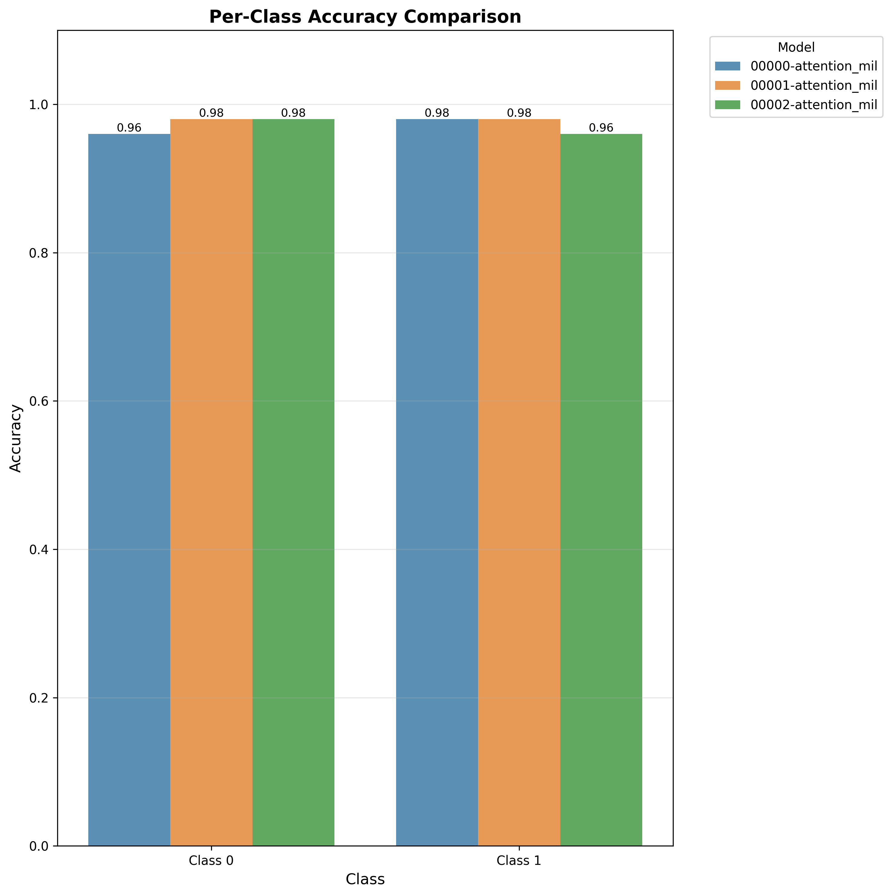
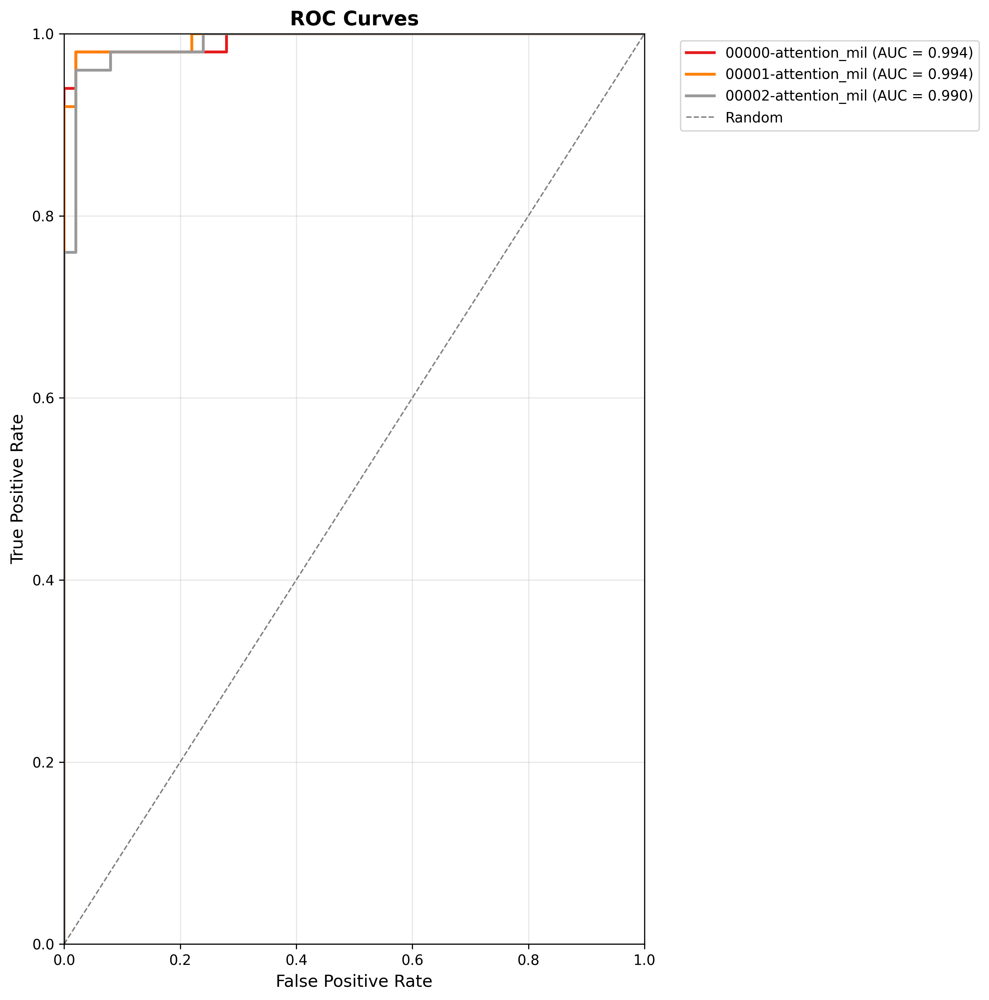

Quickstart
This guide walks you through a minimal, end-to-end AutoMIL workflow: from preparing your data to running a first model evaluation. It is intended to provide a high-level overview of the typical AutoMIL pipeline.
Dataset Infos
For the purposes of this demonstration, we use an example set of whole-slide images from The Cancer Genome Atlas Program (TCGA) consisting of lung tissue samples. This dataset can be downloaded via slideflows project module, which provides the slides in the form of a preconfigured project named LungAdenoSquam. Since the indiviual image files are quite large and the full project contains 941 slides, we restrict this example to a randomly sampled subset of 100 slides. The subset can be replicated using this annotation file. Provide this file to slideflows API to make sure only the annotated slides are downloaded:
#!/usr/bin/env python3
import slideflow as sf
from slideflow.project_utils import LungAdenoSquam
if __name__ == "__main__":
project = sf.create_project(
root='LungAdenoSquam',
cfg=LungAdenoSquam().__dict__,
annotations="path/to/lung_labels.csv",
download=True
)
(Optional) 1. Activate Your Environment
If you installed AutoMIL in a virtual environment, ensure your venv is activated before running AutoMIL.
source .venv/bin/activate
2. Prepare the Dataset
AutoMIL expects your WSI dataset to consist of slide images in one of many supported formats (.tiff, .svs, .tif etc) and a file containing slide-level label information
A minimal dataset consists of:
- A directory containing slide images
- A .csv metadata file with slide-level annotations
Example directory structure:
./LungAdenoSquam/
├── slides/
├── TCGA-05-4430-01Z-00-DX1.95659bbb-3091-4370-bc1d-6c6c1baa7b3d.svs
├── TCGA-55-A48Z-01Z-00-DX1.0867DC6A-2A51-4CF1-AE3F-0526CE2DD740.svs
├── TCGA-55-A4DG-01Z-00-DX1.9CE9B7BE-48EF-44F1-9C25-F15700A3E5DE.svs
└── ...
└── lung_labels.csv
With annotations.csv:
patient,subtype,site,slide
TCGA-05-4430,adenocarcinoma,Site-61,TCGA-05-4430-01Z-00-DX1.95659bbb-3091-4370-bc1d-6c6c1baa7b3d
TCGA-55-A48Z,adenocarcinoma,Site-67,TCGA-55-A48Z-01Z-00-DX1.0867DC6A-2A51-4CF1-AE3F-0526CE2DD740
TCGA-55-A4DG,adenocarcinoma,Site-67,TCGA-55-A4DG-01Z-00-DX1.9CE9B7BE-48EF-44F1-9C25-F15700A3E5DE
3. Run the basic training pipeline
To train a basic Attention_MIL model on the dataset, run the automil train command with default parameters:
automil train ./LungAdenoSquam/slides ./LungAdenoSquam/lung_labels.csv results -v -lc "subtype" -sc "slide"
AutoMIL expects the column containing labels to be named label and the slide names to be identical to the patient identifiers in the patient column. Using the -lc | --label-colum option, the label column name can be overriden and using the -sc | --slide-column option, a specific column containing slide identifiers can be provided
Using the verbose flag -v, automil will display additional information messages, giving an overview of the pipelines progress:
INFO Executing command:
/data/jonas/Master/AutoMIL/.venv/bin/automil train
./Datasets/LungAdenoSquam/slides
./Datasets/LungAdenoSquam/annotations_balanced.csv results
-v -lc subtype -sc slide
INFO Using resolution presets: ['Low']
INFO Using model type: Attention_MIL
INFO Using default image backend cucim
INFO Project directory results already exists
INFO Annotations saved to results/annotations.csv
INFO Project scaffold setup complete
INFO Loading existing project at results
INFO Project Summary
INFO ┌──────────────────────┬─────────────────────────────────────────────────┐
│Project Directory: │ results │
│Slide Directory: │ Datasets/LungAdenoSquam/slides │
│Annotations File: │ Datasets/LungAdenoSquam/annotations_balanced.csv│
│Patient Column: │ patient │
│Label Column: │ subtype │
│Slide Column: │ slide │
│Transform Labels: │ False │
│Modified Annotations: │ results/annotations.csv │
│Slideflow Project: │ Loaded │
└──────────────────────┴─────────────────────────────────────────────────┘
INFO Setting up dataset for resolution preset: Low
INFO Computed average MPP across slides: 0.260
INFO Dataset Summary
INFO ┌──────────────────┬─────────┐
│Resolution Preset │ Low │
│Tile Size (px) │ 1000px │
│Magnification │ 10x │
│Microns-Per-Pixel │ 0.260 │
│Tile Size (µm) │ 260.00µm│
│Pretiled Input │ False │
│TIFF Conversion │ False │
└──────────────────┴─────────┘
INFO Preparing dataset source at resolution Low (1000px,
260.00um)
If not already done, tile extraction and feature bag generation will commence, and the resulting data will be stored results/tfrecords and `results/bags respectively
[16:24:01] INFO Finished tile extraction for TCGA-85-8664 (1605 tiles of
1605 possible)
INFO No ROI for
TCGA-98-A53J-01Z-00-DX1.EEC6256E-D331-4731-B00C-08622C725F61
, using whole slide.
[16:27:14] INFO Finished tile extraction for TCGA-98-A53J (1595 tiles of
1595 possible)
INFO No ROI for
TCGA-44-8119-01Z-00-DX1.1EBEBFA7-22DB-4365-9DF8-C4E679C11312
, using whole slide.
[16:27:41] INFO Finished tile extraction for TCGA-44-8119 (211 tiles of 211
possible)
[16:27:42] INFO No ROI for
TCGA-21-1071-01Z-00-DX1.a9bba825-1c92-4101-9086-c4d1c91117af
, using whole slide.
[16:28:55] INFO Finished tile extraction for TCGA-21-1071 (674 tiles of 674
possible)
INFO No ROI for
TCGA-21-1075-01Z-00-DX1.937872ae-4d6f-4d7a-b54f-b7e797cb84b0
, using whole slide.
[16:29:53] INFO Finished tile extraction for TCGA-21-1075 (457 tiles of 457
possible)
INFO No ROI for
TCGA-O2-A52V-01Z-00-DX1.561ADDAE-EC55-461A-84B5-535C93E39C56
, using whole slide.
[16:36:20] INFO Finished tile extraction for TCGA-O2-A52V (3460 tiles of
3460 possible)
Tile Extraction Takes Time
Depending on the slide size and the amount of tissue that can be tiled, the tile extraction may take some time (see the timestamps in the log above). If possible, consider using a pretiled dataset
Finally, the trained model will be saved in the results/ directory under results/models/.
4. Evaluate the trained model
To evaluate the trained model on the same dataset, run the automil evaluate command:
automil evaluate ./LungAdenoSquam/slides ./LungAdenoSquam/lung_labels.csv ./results/bags ./results/models -v -lc "subtype" -sc "slide" -o "./results/evaluation"
Once again, the verbose flag provides detailed information on the pipelines progress and current state:
INFO Evaluation complete.
INFO Model Comparison:
INFO model Accuracy AUC F1
00002-attention_mil-label 0.85 0.94 0.86
00001-attention_mil-label 0.90 0.92 0.90
00000-attention_mil-label 0.85 0.90 0.84
INFO Saved plot 'box_plots' to
results/evaluation/figures/box_plots.png
INFO Saved plot 'model_comparison' to
results/evaluation/figures/model_comparison.png
INFO Saved plot 'per_class_accuracy' to
results/evaluation/figures/per_class_accuracy.png
INFO Saved plot 'roc_curves' to
results/evaluation/figures/roc_curves.png
This will create an evaluation report inside the ./results/evaluation directory, containing metrics and plots of the model performance:

Metric Comparison across all models

Per Class Accuracy scores across all model

The ROC curves for all models